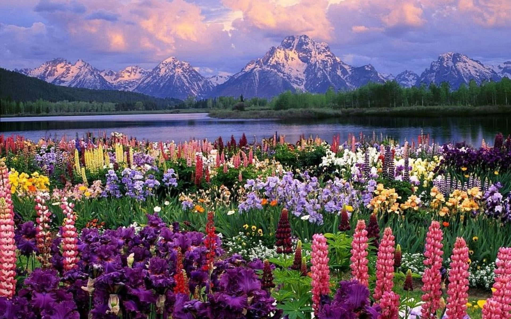
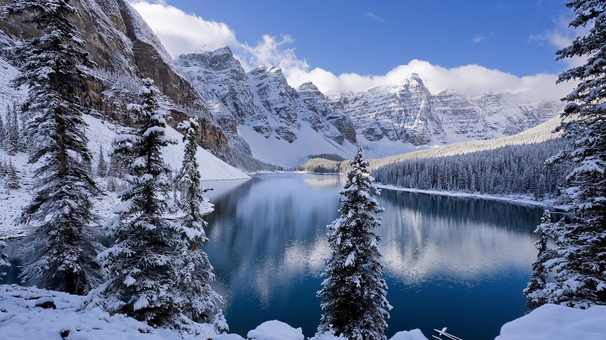

Las estaciones del año son primavera, verano, otoño e invierno, cada una con una duración aproximada de tres meses y fechas que varían según el hemisferio. Las estaciones del año son periodos en los que se producen cambios climáticos, de temperatura y de duración del día y la noche debido a la inclinación del eje terrestre (23,5°) y el movimiento de traslación de la Tierra alrededor del Sol. Esto provoca que los rayos solares incidan con diferente intensidad en cada región del planeta, generando variaciones estacionales.

La primavera es una de las cuatro estaciones del año, la cual llega después del invierno y precede al verano, con una duración de tres meses aproximadamente. Representa el renacimiento de la naturaleza después del invierno. La palabra primavera deriva del latín prima que expresa 'primer' y vera que significa 'verdor'.
una época crucial para la polinización. Las abejas y otros polinizadores trabajan activamente, contribuyendo al ciclo vital de muchas plantas. Esto se traduce en un aumento de la actividad animal en general. Además, el aumento de horas de luz influye también en el proceso de fotosíntesis de las plantas y en una mayor fertilidad de los suelos en general.
El verano es la estación del año que tiene lugar entre la primavera y el otoño. Se trata de la época más calurosa del año, con las marcas térmicas más elevadas. En el hemisferio septentrional, el verano tiene lugar entre junio, julio y agosto, mientras que en el meridional, corresponde a diciembre, enero y febrero. Cabe destacar que, cuando en el hemisferio norte tiene lugar la época estival, en el hemisferio sur es invierno (y viceversa).
El verano está asociado, por lo general, a las vacaciones y al ocio. Las altas temperaturas facilitan la vida al aire libre e invitan a la gente a disfrutar de la playa, los parques o los paseos en general. El verano suele aparecer vinculado a la diversión y la alegría mientras que, en cambio, el invierno se relaciona con la tristeza.

El otoño se caracteriza por la caída de hojas de aquellos árboles que forman parte del grupo de los caducifolios. Los árboles de este tipo, a diferencia de los perennes, renuevan sus hojas cada año. Con la llegada del otoño, por lo tanto, las hojas adquieren un color ocre, amarillento o marrón y caen al suelo una vez que están secas. Durante el invierno, los árboles caducifolios permanecen “desnudos” y recién vuelven a exhibir su follaje en la primavera.
Aunque sus características varían según la región geográfica, lo habitual es que, en el otoño, las temperaturas desciendan respecto al verano. El clima fresco se va acentuando hasta alcanzar los niveles térmicos más bajos del año en el invierno.

El invierno es la estación del año que sigue al otoño y precede a la primavera, con una duración de tres meses aproximadamente. Y que está marcada por las temperaturas más bajas del año en la mayor parte del planeta.
Durante el invierno existe una mayor necesidad de elementos de abrigo y refugio, con el fin de superar las bajas temperaturas. Por ello, se utilizan diferentes sistemas de calefacción, desde el fuego hasta otros más sofisticados. La ropa utilizada también es más gruesa o impermeable, con el fin de enfrentar con éxito las inclemencias climáticas. Durante esta época, en muchas regiones del mundo se siembra también lo que se pretende cosechar durante la primavera. Relacionado con esto existen algunas tradicionales, como el Día de la Marmota, en EEUU, en el que se utiliza a este animal para predecir cuánta tardará en llegar la primavera.